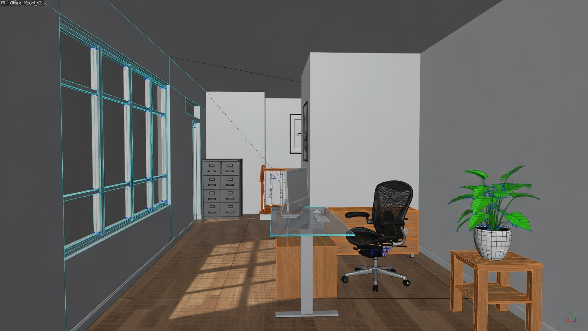

3D Rendering
3D rendering allows designers and clients to visualize a project before construction begins. At Excelsior Designs, we use advanced visualization tools to create realistic digital models that demonstrate how a space will look and function once completed.

Through detailed lighting, materials, and spatial modeling, 3D renderings help communicate design ideas more clearly than traditional sketches or technical drawings. Clients are able to explore the space from different perspectives and better understand the overall design concept.
Realistic Visualization
Our team creates highly detailed renderings that replicate real-world conditions including natural lighting, textures, and material finishes. These visualizations allow clients to experience the atmosphere of a design before it is built.
Design Decision Support
By presenting multiple design options through 3D visualization, clients can compare layouts, color schemes, and materials more effectively. This process reduces uncertainty and helps refine the final design direction.
Improved Communication
3D renderings act as a powerful communication tool between designers, clients, and project teams. Clear visual representations reduce misunderstandings and make it easier for everyone involved to collaborate on the final design solution.